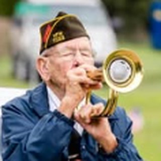
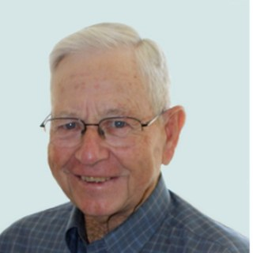
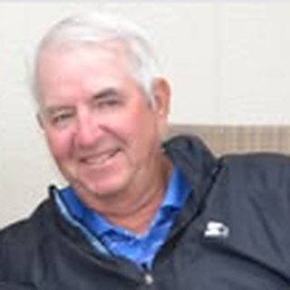
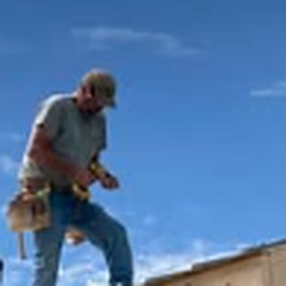
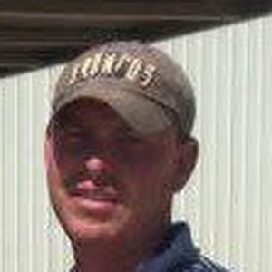

Willard Hart
Founder · Secretary-Treasurer
The dreamer. He first asked "why couldn't there be a course near Haxtun?" and helped will F&H into being in 1972. Decades later he wrote down the course's story — the firsthand account this site preserves.
Honoring Our Builders
The people who built F&H — and keep it going.
F&H Golf Course was never built by a company or a contractor — it was built by neighbors. From a dream over three cups of coffee in 1972 to the grass greens of 1988 and every work day since, this course exists because people gave their time, equipment, and labor. This Hall of Fame honors a few of the many who made it happen. Their stories come from founder Willard Hart's firsthand account and the local press of the day.
1972
Six men with a dream.
Founder · Secretary-Treasurer
The dreamer. He first asked "why couldn't there be a course near Haxtun?" and helped will F&H into being in 1972. Decades later he wrote down the course's story — the firsthand account this site preserves.
Founder · First President
Co-founder and the club's first — and long-time — president. He drew up the plans for the course and helped stake out the original nine holes by hand.
Founder
Co-founder who tracked down the land — he contacted owner Virginia Parker and secured the lease that gave the course its home, and loaned his tractor for the earliest work.
Founding Director
One of the six founding members who "had a dream" — and passed the hat to fund the rent and the first sand greens.
Founding Director
A founding member, among the six who started the club over three cups of coffee in April 1972.
Founding Director
A founding member who helped stake out the nine-hole course and brought the cement mixer and oil that built the first sand greens.
Honoring
Beyond the founders — the leaders, builders, and stewards who keep F&H going.
Landowner
The California landowner who leased the club 80 acres south of Dailey for $400 a year — and in 1973 sold it outright — giving F&H its ground.
Course Builder
In 1987–88 he formed the grass greens and tee boxes and set the sprinklers, turning a sand-green course into a grass-green one — for a fraction of the going cost.

Longtime President
Donated the ditch digger that laid 17,000 feet of water pipe, dug 27,000 feet of trenches, and led project after project through the grass-green era and beyond.
Builder · Tournaments
A driving force behind the grass greens — hauling, carts, and the famed 1988 opening-day tournament. When a mover wanted $4,000 to relocate the cart quonset, Verl and a crew of volunteers took it apart and moved it themselves.

Past President
A past president — and "have you noticed Harold's name shows up a lot?" He raffled the golf cart, ran the tractor for fairways and cart paths, and turned up for nearly every work day.
Volunteer
Community spirit in person — he hauled hundreds of loads of dirt for the greens and tees, and helped weld, drill, and seed the fairways.
Women's Program
Guided the F&H women's program, and with the club's ladies put on the tournament dinners whose profits went straight back into the clubhouse, year after year.

Past President
A past president and club officer who helped remodel the clubhouse and care for the grounds — one of the McConnells whose hands are all over F&H.
Volunteer
The club's "Queen of Laughter" — she kept everyone fed and laughing, serving the noon meals at work days and tournaments.
Past President
A past president of F&H Golf Course, remembered with gratitude for his years of leadership and his dedication to the club.

Past President
A past president of F&H — pictured tool belt on and hammer in hand, leading by example with the hands-on work that keeps the course going.
Clubhouse Manager
The backbone of F&H's day-to-day — a longtime employee and clubhouse manager who keeps the course running, year in and year out.
Head Greens Keeper
Head greens keeper — keeps F&H's bent-grass greens, tees, and fairways in top shape all season long.
Past President
A past president of F&H, giving his time and leadership to keep the course thriving for the next generation.

Past President
A past president whose F&H roots run deep — as a youngster he chased down the range balls at tournaments, and grew up to help lead the club.
Past President
A past president and dedicated volunteer — always helpful with his skill, knowledge, and equipment.
Volunteer
An incredible volunteer who spent countless hours at the course — and maybe more driving his equipment down from Iliff whenever it was needed.
Carpenter
The club's "King of Volunteers" and carpenter extraordinaire — he built many of the fixtures still standing on the course today.
Supporters & Donors
Longtime supporters and donors to F&H — from Ken & Gene loaning the very first tractor and carryall to decades of generosity that helped keep the course going.
With Thanks
And so many more who gave labor, equipment, and materials.
…and the towns of Fleming and Haxtun, Logan and Phillips counties, and the many families, farmers, and friends who donated tractors, trucks, meals, money, and countless hours. F&H is yours.
Know someone who belongs here, or have a photo to add? We'd love to include them.